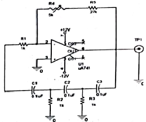
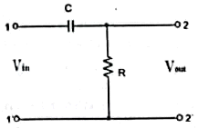
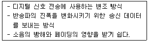
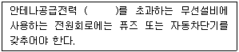
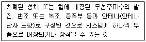
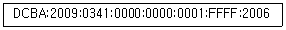

무선설비기능사 (2021-10-02 기출문제)
1과목: 임의 구분
1. 저항 양단에 90[V]의 전압을 인가했을 때 30[A]전류가 흐른다. 이 때 저항 값은 얼마인가?
- 1[Ω]
- 3[Ω]
- 30[Ω]
- 60[Ω]
(정답률: 69%)

2. 저항이 10[Ω]일 때 컨덕턴스 값으로 알맞은 것은?
- 0.1[S]
- 0.2[S]
- 0.3[S]
- 0.4[S]
(정답률: 57%)
3. RLC 병렬회로에서 ωC ＞ 1/ωL인 경우 전압이 전류보다 위상이 어떻게 되는가?
- 뒤진다.
- 앞선다.
- 동상이다.
- 90도 앞선다.
(정답률: 38%)
4. 컨버터(Converter)의 기능으로 옳은 것은?
- DC전력을 증폭
- DC전력을 AC전력으로 변환
- AC전력을 DC전력으로 변환
- AC전력을 증폭
(정답률: 44%)
5. 태양광 발전 시스템에 풍력발전, 열병합발전, 디젤발전 등의 타 에너지원의 발전시스템과 결합하여 촉진지, 부하 혹은 상용계통에 전력을 공급하는 시스템은?
- AC 독립형 시스템
- DC 독립형 시스템
- 재봉연계형 시스템
- 하이브리드 시스템
(정답률: 69%)
6. Ge 다이오드의 순방향 진합강하는 대략 얼마 정도인가?
- 0.2~0.3[V]
- 0.4~0.5[V]
- 0.6~0.7[V]
- 0.8~0.9[V]
(정답률: 36%)
7. 다음 증폭 방식 중 송신기의 전력 증폭기와 주파수 재배 증폭기에 주로 사용되는 것은?
- A급
- B급
- AB급
- C급
(정답률: 30%)
8. 다음 중 전력 손실이 거의 없는 전력 증폭회로는?
- A급
- B급
- C급
- D급
(정답률: 18%)
9. 다음 중 FET에 관한 설명으로 옳은 것은?
- 자유 전자나 정공 중 소수 반송자에 의해 전류가 흐른다.
- BJT에 비해서 입력 및 출력 임피던스가 높아서 전압 증폭 소자로 적합하다.
- VCS가 일정할때 VDS가 핀치 오프 전압에 이르면 드레인과 소스 사이에는 전류가 흐르지 않는다.
- 전류는 항상 소스에서 드레인으로 흐른다.
(정답률: 39%)
10. 어떤 발진회로를 설계하고자 할 때 능동소지의 증폭이득이 A=50이면 궤환회로의 감쇠율을 얼마로 하여야 하는가?
- 1/25
- 1/50
- 1/75
- 1/100
(정답률: 50%)
11. 아래의 발진회로에서 TP1에 나타나는 출력 주파수는 약 얼마인가?

- 130[Hz]
- 650[Hz]
- 780[Hz]
- 3.9[kHz]
(정답률: 48%)
12. 다음 중 변조의 필요성에 해당되지 않는 것은?
- 시스템 구성 대형화
- 잡음과 간섭의 억제
- 장거리 전송
- 다중화 통신
(정답률: 42%)
13. 다음 중 디지털변조 방식이 아닌 것은?
- ASK
- FSK
- AM
- PSK
(정답률: 50%)
14. 어떤 회로의 응답이 vo(t)=V(1-e-OM)[V]일 때 시정수로 알맞은 것은?
- 0.1[sec]
- 0.5[sec]
- 5[sec]
- 10[sec]
(정답률: 19%)
15. 그림과 같은 회로를 사용하여 입력파형을 미분할 때에는 입력 파형의 주기 T와 회로의 시정수 RC사이에 어떤 조건이 만족되어야 하는가?

- T＞＞RC
- T＜＜RC
- T=RC
- T≤RC
(정답률: 17%)
16. 다음에서 설명하는 송신기의 변조방식으로 알맞은 것은?

- 진폭편이 방식(ASK)
- 주파수편이 방식(FSK)
- 위상편이 방식(PSK)
- 직교진폭 변조(QAM)
(정답률: 42%)
17. 다음 중 AM송신기의 핵심 요소가 아닌 것은?
- 발진기
- 변조기
- 피변조파
- 복조기
(정답률: 36%)
18. 다음 중 AM통신 방식에 비해 FM통신 방식의 특징으로 틀린 것은?
- 신호대잡음비가 개선된다.
- 점유주파수대폭이 좁다.
- 소비전력이 적다.
- 레벨 변동의 영향이 없다.
(정답률: 44%)
19. 진폭과 주파수가 모두 일정한 반송파를 이용하여 그 위상을 2진 전송 부호에 대응시켜 변화시키는 방식은?
- 진폭편이 변조 방식
- 주파수편이 변조 방식
- 위상편이 변조 방식
- 진폭위상편이 변조 방식
(정답률: 32%)
20. 다음 중 AM 송신기에서 고주파 전력을 증폭하기 위한 종단전력 증폭기에 대한 설명으로 틀린 것은?
- C급 증폭 방식을 주로 사용한다.
- 스퓨리어스(Spurious) 말사가 커야 한다.
- 출력이 크고 파형이 일그러지지 않아야 한다.
- 보통은 피변조기로 동작시킨다.
(정답률: 53%)
2과목: 임의 구분
21. 우선 수신기에서 주파수와 진폭이 일정한 신호전파를 수신하면서 장시간에 걸쳐 조정하지 않는 상태로 일정한 출력을 낼 수 있는 능력을 나타내는 척도는?
- 감도(Sensitivity)
- 선택도(Selectivity)
- 충심도(Fidelity)
- 안정도(Stability)
(정답률: 48%)
22. 초단파(VHF:Very High Frequency)의 주파수 범위는?
- 300[kHz] ~v 3[MHz]
- 3[MHz] ~ 30[MHz]
- 30[MHz] ~ 300[MHz]
- 300[MHz] ~ 3[GHz]
(정답률: 44%)
23. 자유 공간에서 전자파의 주파수가 3[MHz]인 전파의 파장은 얼마인가? (단, 광속도(C)=3×103[m/s]
- 50[m]
- 100[m]
- 200[m]
- 300[m]
(정답률: 48%)
24. 다음 중 창ㆍ중파용 안테나에 대한 설명으로 틀린 것은?
- 전파의 전파 특성상 수직 핀파를 이용한다.
- 대전력 송신기가 일반적으로 사용된다.
- 공진을 이용한 안테나를 주로 사용한다.
- 실효고를 높이는 안테나를 주로 사용한다.
(정답률: 44%)
25. 다음 중 에드콕(Adcock) 안테나의 특징과 거리가 먼 것은?
- 방향 탐지용이다.
- 주간 오차 방지용이다.
- 수직 편파용이다.
- 수평 편파 성분은 수신되지 않는다.
(정답률: 50%)
26. 다음 중 급전선이 갖추어야 할 조건으로 적합하지 않은 것은?
- 전력의 전송능력이 클 것
- 불필요한 전파 복사가 다른 곳에 방해를 주지 않을 것
- 불필요한 전파가 유도되지 않을 것
- 급전선의 파동 임피던스가 무한대이어야 할 것
(정답률: 48%)
27. 다음 중 송ㆍ수신 시스템과 안테나와의 임피던스 부정합 시 발생되는 운재정으로 틀린 것은?
- 안테나에 전달되는 전력이 감소된다.
- 급전선의 손실이 감소된다.
- 급전선에 방사가 생긴다.
- 송신기의 동작이 불안정 해진다.
(정답률: 48%)
28. 다음 중 이동통신서비스의 통신방식과 관계없는 것은?
- PSTN(Public Switched Telephone Network)
- TRS(Trunked Radio System)
- LTE(Long Term Evolution)
- WCDMA(Wideband Code Division Multiple Access)
(정답률: 12%)
29. 다음 중 셀룸라 이동통신 시스템에서 가입자가 증가하여 통화용량을 증가시키는 방법으로 틀린 것은?
- 기지국의 채널을 증설한다.
- 주파수 스펙트럼을 추가한다.
- 동적 주파수 할당을 한다.
- 대규모 셀(Cell)로 구성한다.
(정답률: 42%)
30. 공중이 직접 수신할 수 있도록 할 목적으로 디지털 오디오, 비디오 및 데이터를 지상의 송신설비를 이용하여 초단파 대역에서 방송하는 것은?
- DMB
- DAB
- FM
- DTV
(정답률: 53%)
31. 4K(3.840×2.160) 또는 BK(7.680×4.320) 해상도, 초당 60 또는 120 프레임의 고프레임률(HFR: High Frame Rale), 고휘도와 고명암비를 위한 HDR(High Dynamic Range), 고선명(HD)보다 색 영역이 넓은 고색 재현(WCG: Wide Color Gamut)을 주요 특성으로 하는 방송은?
- PAL
- NTSC
- UHDTV
- DMB
(정답률: 48%)
32. 다음 중 무선 LAN 규격중 가장 속도가 빠른 것은?
- IEEE 802.11b
- IEEE 802.11g
- IEEE 802.11a
- IEEE 802.11n
(정답률: 39%)
33. AM 수신기의 충실도와 관계가 없는 것은?
- 주파수 개선도
- 위상왜곡
- 맥동율
- 검파왜곡
(정답률: 24%)
34. 다음 중 스퓨리어스 발사에 포함되지 않는 것은?
- 고조파 발사
- 기생발사
- 상호변조
- 지주파 발사
(정답률: 23%)
35. FM수신기에 사용된 리미터는 무엇을 방지하는 것인가?
- 전원전압의 변동 방지
- 고조파에 의한 찌그러짐 방지
- 충격성 잡음 방지
- 기생진동 방지
(정답률: 42%)
36. 다음 중 무선설비규칙의 기술기준 내용으로 적합하지 않은 것은?
- 주파수허용편차
- 방송수신만을 목적으로 하는 설비의 송신전력 편차
- 주파수대폭의 허용치
- 스퓨리어스영역 불요발사의 허용치
(정답률: 50%)
37. 주파수허용편차의 표시방법으로 가장 적합한 것은?
- 퍼센트[%]로 표시한다.
- 헤르츠[Hz]로 표시한다.
- 백만분율 또는 헤르츠[Hz]로 표시한다.
- 백만분율 또는 퍼센트[%]로 표시한다.
(정답률: 38%)
38. 전력선통신설비와 유도식통신설비에서 발사되는 주파수허용편차로 알맞은 것은?
- 0.1[%]
- 0.2[%]
- 0.3[%]
- 0.5[%]
(정답률: 36%)
39. 무선국에서 사용하는 주파수마다의 중심주파수를 말하는 것은?
- 지정주파수
- 기준주파수
- 특성주파수
- 중간주파수
(정답률: 25%)
40. 초단파방송을 행하는 방송국 송신설비의 안테나공급전력의 허용편차로 앎자은 것은?
- 상한 5[%], 하한 5[%]
- 상한 10[%], 하한 20[%]
- 상한 10[%], 하한 15[%]
- 상한 5[%], 하한 10[%]
(정답률: 19%)
3과목: 임의 구분
41. 다음 괄호 안에 알맞은 것은?

- 3[W]
- 6[W]
- 8[W]
- 10[W]
(정답률: 36%)
42. 전파응용설비에서 발사되는 기본파 또는 스퓨리어스 발사에 의한 것으로 100[m]의 거리에서 산업용 전파응용설비의 전계강도의 허용치는?
- 10[μV/m]이하
- 50[μV/m]이하
- 100[μV/m]이하
- 200[μV/m]이하
(정답률: 44%)
43. 다음 중 적합인증을 받아야 하는 경우가 아닌 것은?
- 전파환경 및 방송통신망 등에 위해를 줄 우려가 있는 방송통신 기자재 등
- 전자파로부터 정상적인 동작을 방해받을 정도의 영향을 받는 방송통신기자재 등
- 측정ㆍ검사용으로 사용되는 방송통신기자재 등
- 사람의 생명과 안전 등에 중대한 위해를 줄 우려가 있는 방송통신 기자재 등
(정답률: 57%)
44. 무선설비 기기에 대한 적합인증을 받고자 할 때 신청하는 곳은?
- 전기전자검사원
- 국립전파연구원
- 중앙전파관리소
- 한국방송통신전파진흥원
(정답률: 25%)
45. “적합성평가를 받은 기자재가 적합성평가기준대로 제조ㆍ수입 또는 판매되고 있는지 조사 또는 시험하는 것”을 무엇이라고 하는가?
- 사후관리
- 사전관리
- 적합성평가 관리
- 적합인증 관리
(정답률: 44%)
46. 다음 보기가 설명하는 부품으로 알맞은 것은?

- 유선 부품
- 무선 송ㆍ수신용 부품
- 송신용 부품
- 수신용 부품
(정답률: 42%)
47. 다음 무선통신 방식 중 보안성이 가장 우수한 방식은?
- 위상변조방식(PM)
- 코드분할 다중접속방식(CDMA)
- 주파수변조방식(FM)
- 진폭변조방식(AM)
(정답률: 50%)
48. 무선종사자에 대해 통신보안 교육을 받도록 규정한 법률은?
- 전파법
- 전기통신기본법
- 국가보안법
- 전기통신사업법
(정답률: 25%)
49. 다음 중 통신보안의 1차적 책임은?
- 기관장
- 통신이용자
- 전문기안자
- 전문통제권자
(정답률: 48%)
50. 전기통신역무를 제공하기 위하여 개설한 무선국의 무선통신업무에 종사하는 자는 몇 년마다 통신보안교육을 받아야 하는가?
- 1년
- 3년
- 5년
- 10년
(정답률: 50%)
51. 명령어 수행을 위해 CPU가 상태변환을 하도록 하는 동작을 무엇이라 하는가?
- fetch
- micro operatio
- count operation
- progrm operation
(정답률: 24%)
52. 제어논리장치(CLU)와 산술논리연산장치(ALU)의 내부 상태 또는 연산 결과 및 시스템제어를 위한 정보가 각 비트마다 배정되어 실행 순서를 제어하기 위해 사용되는 레지스터는?
- 플래그 레지스터(Flag Register)
- 주소 레지스터(Memory Address Register)
- 기억 레지스터(Memory Buffer Register)
- 명령 레지스터(Instruction Register)
(정답률: 18%)
53. 사용자가 한번만 내용을 기입할 수 있으나, 지울 수 없는 것은?
- EPROM
- EEPROM
- PROM
- Flash Momory
(정답률: 44%)
54. 다음 중 데이터 표현 방식에서 부동 소수점형식에 대한 설명으로 알맞지 않은 것은?
- 부호 비트와 지수부, 가수부로 구성된다.
- 실수 데이터를 연산에 사용하며, 양수와 음수를 모두 표현할 수 있다.
- 고정 소수점 형식보다 연산속도가 매우 빠르다.
- 소수점 이하의 정밀한 계산이 가능하기 때문에 복잡한 수치 계산에 주로 사용된다.
(정답률: 50%)
55. 다음 중 순서도의 기호와 설명이 맞는 것은?
- : 오프라인 기억
- : 다른 페이지에서 순서도 흐름을 연결
- : 네트워크에서 입력 받음
- : 데이터를 정렬할 때 사용
(정답률: 38%)
56. 다음 중 시스템 순서도에 대한 설명으로 옳은 것은?
- 프로그램을 작성하기 전에 처리과정에 중점을 두고 작성하는 순서도
- 시스템 전반에 걸친 내용을 자료의 흐름과 입출력에 중점을 두고 총괄적으로 나타낸 것
- 프로그램 전체의 흐름이 한눈에 파악될 수 있도록 개략적으로 표현한 것
- 코딩하기 직전에 작성되는 것으로, 개략 순서도의 세부사항까지 나타낸 순서도
(정답률: 30%)
57. 다음 중 1세대 컴퓨터 프로그램 언어는?
- 기계어
- 포트란(Fortran)
- 자바(Java)
- C
(정답률: 57%)
58. 다음 중 운영체제에 관한 설명으로 옳지 않은 것은?
- 제어 프로그램에는 작업 관리 프로그램, 데이터관리 프로그램, 감시 프로그램 등이 있다.
- 운영체제는 컴퓨터가 동작하는 동안 하드디스크에 위치하며 프로세스, 기억장치, 파일, 입출력장치 등의 자원을 관리한다.
- 운영체제의 운영 방식에는 일괄 처리, 실시간 처리, 분산 처리 등이 있다.
- 운영체제는 하드웨어와 응용프로그램 사이의 인터페이스 역할을 한다.
(정답률: 38%)
59. TCP/IP 프로토콜 계층구조에서 TCP와 UDP 2개의 프로토콜을 이용하여 호스트들 간에 통신을 제공하는 것은?
- 응용 계층
- 전송 계층
- 네트워크 계층
- 데이터링크 계층
(정답률: 38%)
60. 다음의 IPv6의 긴 주소를 주소 생략법으로 알맞게 변환한 것은?

- DCBA:2009:341::1:FFFF:2006
- DCBA:29:341::1:FFFF:2006
- DCBA:2009:341:0:0:1:FFFF:2006
- DCBA:29:341::1:FFFF:26
(정답률: 25%)
전압 = 전류 x 저항
여기서 전압은 90[V], 전류는 30[A]로 주어졌으므로 저항을 구할 수 있습니다.
저항 = 전압 / 전류 = 90[V] / 30[A] = 3[Ω]
따라서 정답은 "3[Ω]"입니다.